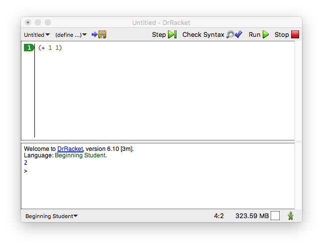
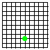
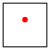
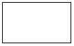
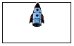
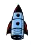

Пролог: Как Программировать
Когда вы были маленьким ребенком, родители учили вас считать и Взгляните на Обучающую Часть I.. выполнять простые вычисления пальцами: “1 + 1 это 2”; “1 + 2 это 3” и так далее. Затем они спрашивали: “А что такое 3 + 2?” и вы бы сосчитали пальцы одной руки. Они программировали, а вы вычисляли. В каком-то смысле это все, что нужно для программирования и вычислений.
Загрузите DrRacket с его веб-сайта.
(+ 1 1)

Рисунок 3: Знакомство с DrRacket
-
Верхняя половина DrRacket называется definitions area(областью определений). В этой области вы создаете программы, что называется редактированием. Как только вы добавляете слово или что-то меняете в области определений, в верхнем левом углу появляется кнопка SAVE(СОХРАНИТЬ). Когда вы нажимаете SAVE в первый раз, DrRacket запрашивает у вас имя файла, чтобы он мог навсегда сохранить вашу программу. После того, как ваша область определений будет связана с файлом, нажатие кнопки SAVE гарантирует, что содержимое области определений будет безопасно сохранено в файле.
-
Программы состоят из expressions(выражений). Вы видели выражения в математике. На данный момент выражение представляет собой либо простое число, либо что-то, что начинается с левой круглой скобки “(” и заканчивается соответствующей правой круглой скобкой “)”, что DrRacket выделяет, закрашивая область между парой скобок.
-
Когда вы нажимаете RUN, DrRacket оценивает(вычисляет) выражения из области определений и показывает их результат в interactions area(области взаимодействий). Затем DrRacket, ваш верный слуга, ждет ваших команд в командной строке prompt/приглашении (>). Появление приглашения сигнализирует о том, что DrRacket ждет, когда вы введете дополнительные выражения, которые затем вычисляются так же, как в области определений:
> (+ 1 1) 2
Введите выражение в командной строке, нажмите клавишу “return” или “enter” на клавиатуре и посмотрите, как DrRacket отреагирует на результат. Вы можете делать это так часто, как хотите:
Естественно, когда DrRacket производит вычисления за вас, он использует правила, которые вы знаете и любите из математики. Как и вы, он может определять результат сложения только тогда, когда все операнды являются простыми числами. Если операнд представляет собой операторное выражение в скобках - что-то, что начинается с “(” и операции - он сначала определяет результат этого вложенного выражения. В отличие от вас, ему никогда не нужно задумываться, какое выражение вычислить первым, потому что это первое правило есть единственное правило.
> (+ (1) (2)) function call:expected a function after the open parenthesis, found a number
В этом контексте программировать - значит записывать понятные арифметические выражения, а вычислять - определять их значение. С DrRacket легко изучить этот вид программирования и вычислений.
Арифметика и арифметика
Если бы в программировании были только числа и арифметика, это было бы так же скучно, как математика. К счастью, программирование - это не только числа: текст, логические значения, изображения и многое другое. Шучу: математика - увлекательный предмет, но пока много от него не понадобится.
> "hello world" "hello world"
> (string-append "hello" "world") "helloworld"
> (string-append "hello " "world") "hello world"
(string-append "hello" " " "world")
Вы можете выполнить больше операций строками, чем просто их складывать. Вы можете извлекать части из строки, переворачивать их, отображать все буквы в верхнем (или нижнем) регистре, удалять пробелы слева и справа и т. Д. И, что самое главное, вам не нужно ничего запоминать. Если вам нужно узнать, что вы можете делать со строками, поищите термин в HelpDesk. Используйте F1 или раскрывающееся меню справа, чтобы открыть HelpDesk. Посмотрите руководства по BSL и его раздел о предопределенных операциях, особенно для строк.
> (+ (string-length "hello world") 20) 31
> (number->string 42) "42"
> (string->number "42") 42
> (string->number "hello world") #false
> (and #true #true) #true
> (and #true #false) #false
> (or #true #false) #true
> (or #false #false) #false
> (not #false) #true
(and (or (= (string-length "hello world") (string->number "11")) (string=? "hello world" "good morning")) (>= (+ (string-length "hello world") 60) 80))
>
Добавьте (require 2htdp/image) в область определений или выберите Add Teachpack(Добавить пакет обучения) в меню Language(Язык) и выберите image(изображение) в меню Preinstalled HtDP/2e Teachpack(Предустановленный пакет обучения HtDP/2e).
(* (image-width
) (image-height
> (image-width (square 10 "solid" "red")) 10
> (image-width (overlay (rectangle 20 20 "solid" "blue") (circle 5 "solid" "red"))) 20
(place-image (circle 5 "solid" "green") 50 80 (empty-scene 100 100))

Подведем итоги еще раз. Программировать - значит записывать арифметическое выражение, но вы больше не ограничены скучными числами. В BSL арифметика - это арифметика чисел, строк, логических значений и даже изображений. Однако вычисление по-прежнему означает определение значения выражения, за исключением того, что это значение может быть строкой, числом, логическим значением или изображением.
И теперь вы готовы писать программы, которые заставляют ракеты летать.
Ввод и Вывод
Программы, которые вы написали до сих пор, довольно скучны. Вы записываете выражение или несколько выражений; вы нажимаете RUN; вы видите некоторые результаты. Если вы снова нажмете RUN, вы увидите точно такие же результаты. Фактически, вы можете нажимать RUN сколько угодно раз, и результаты будут те же. Короче говоря, ваши программы действительно похожи на вычисления на карманном калькуляторе, за исключением того, что DrRacket выполняет вычисления со всеми видами данных, а не только с числами.
Это хорошие новости и плохие новости. Это хорошо, потому что программирование и вычисления должны быть естественным обобщением использования калькулятора. Это плохо, потому что цель программирования - иметь дело с большим количеством данных и получать много разных результатов с более или менее одинаковыми вычислениями. (Оно также должно вычислять эти результаты быстро, по крайней мере, быстрее, чем мы.) То есть вам нужно еще больше узнать, прежде чем вы научитесь программировать. Однако не о чем беспокоиться: обладая всеми знаниями об арифметике чисел, строк, логических значений и изображений, вы почти готовы написать программу, которая создает фильмы, а не просто какую-то глупую программу для отображения где-нибудь “hello world”. И этим мы займемся дальше.
На всякий случай, если вы не знали, фильм - это последовательность изображений, которые быстро отображаются по порядку. Если бы ваши учителя алгебры знали об “арифметике изображений“, которую вы видели в предыдущем разделе, вы могли бы создавать фильмы по алгебре вместо скучных числовых последовательностей. Ну вот еще одна такая таблица:
x =
1
2
3
4
5
6
7
8
9
10
y =
1
4
9
16
25
36
49
64
81
?
Оказывается, снять фильм не сложнее, чем заполнить такую таблицу чисел. Действительно, все дело в таких таблицах:
x =
1
2
3
4
y =

y = изображение, которое содержит точку на x2 пикселя ниже вершины.
Эта вторая часть означает, что вы должны указать одно число - для x - чтобы определить конкретное значение для y. Когда вы это сделаете, DrRacket вставляет значение x в выражение, связанное с функцией. Здесь выражение (* x x). После замены x значением, например 1, DrRacket может вычислить результат выражений, который также называется output(выходом) функции.
(y 1)
(y 2)
-
Первое,
(define (FunctionName InputName) BodyExpression)
это function definition(определение функции). Вы узнаете его как таковое, потому что оно начинается с ключевого слова “define”(определить). По сути, оно состоит из трех частей: двух имен и выражения. Первое имя - это имя функции; вам нужно, чтобы функция применялась так часто, как вы хотите. Второе имя, называемое параметром, представляет собой вход функции, который неизвестен, пока вы не примените функцию. Выражение с именем body вычисляет выходные данные функции для определенного входа. -
Второе,
(FunctionName ArgumentExpression)
это function application(применение функции). Первая часть сообщает DrRacket, какую функцию вы хотите использовать. Вторая часть - это вход, к которому вы хотите применить функцию. Если вы читали руководство для Windows или Mac, оно могло бы сказать вам, что это выражение “launches”(запускает) “application”(приложение) с именем FunctionName и будет обрабатывать ArgumentExpression в качестве входных данных. Как и все выражения, последнее, возможно, представляет собой простой фрагмент данных или глубоко вложенное выражение.
> (empty-scene 100 60) 
> (place-image 50 23 (empty-scene 100 60))
> (place-image 50 20 (empty-scene 100 60))

> (place-image  50 30 (empty-scene 100 60)) > (place-image 50 40 (empty-scene 100 60))
(define (picture-of-rocket height) (place-image Рисунок 4: Посадка ракеты (версия 1)
(picture-of-rocket 0) (picture-of-rocket 10) (picture-of-rocket 20) (picture-of-rocket 30)
> (animate picture-of-rocket)
Как только вы нажмете клавишу “return”, DrRacket вычислит выражение; но он не отображает ни результата, ни даже подсказки. Он открывает другое окно - canvas(холст) - и запускает часы, которые тикают 28 раз в секунду. Каждый раз, когда тикают часы, DrRacket применяет picture-of-rocket к числу(количеству посчитанных) тиков, прошедших с момента вызова этой функции. Результаты этих вызовов функций отображаются на холсте и производят эффект анимированного фильма. Моделирование продолжается, пока вы не закроете окно. В этот момент animate возвращает количество пройденных тиков.
Итак, вот что вы узнали в этом разделе. Функции полезны, потому что они могут обрабатывать большой объем данных за короткое время. Вы можете запустить функцию вручную на нескольких выбранных входах, чтобы обеспечить правильные выходные данные. Это называется тестированием функции. Или DrRacket может запускать функцию для множества входов с помощью некоторых библиотек; когда вы это делаете, вы запускаете функцию. Естественно, DrRacket может запускать функции, когда вы нажимаете клавишу на клавиатуре или когда вы манипулируете мышью вашего компьютера. Чтобы узнать, как, продолжайте читать. Что бы ни запускало применение функции, не важно, но имейте в виду, что (простые) программы - это функции.
Множество путей вычисления
Когда вы вычисляете (animate picture-of-rocket), ракета в конечном итоге исчезает в земле. Как отмечает Венкат Памулапати, SpaceX сбросила много ракет вертикально с тех пор, как были написаны эти слова. Это просто глупо. Ракеты из старых фантастических фильмов не тонут в землю; они грациозно приземляются на попку, и на этом фильм должен заканчиваться.
Эта идея предполагает, что вычисления должны происходить по-разному, в зависимости от ситуации. В нашем примере программа picture-of-rocket должна работать “как есть”, пока ракета находится в полете. Однако, когда дно ракеты касается нижней части холста, это должно остановить дальнейшее падение ракеты.
В некотором смысле эта идея не должна быть для вас новой. Даже ваши учителя математики определяют функции, которые позволяют различать различные ситуации
> (sign 10) 1
> (sign -5) -1
> (sign 0) 0
Это хорошее время, чтобы изучить, что делает кнопка STEP. Добавьте (sign -5) в область определений и нажмите STEP(ШАГ) для указанной выше программы sign. Когда появится новое окно, щелкните там стрелки вправо и влево.
(cond [ConditionExpression1 ResultExpression1] [ConditionExpression2 ResultExpression2] ... [ConditionExpressionN ResultExpressionN])
(define (picture-of-rocket.v2 height) (cond [(<= height 60) (place-image (empty-scene 100 60))] [(> height 60) (place-image (empty-scene 100 60))]))
Обладая этими знаниями, теперь вы можете изменить ход моделирования. Цель состоит в том, чтобы не дать ракете опуститься ниже уровня земли на сцене размером 100-на-60 пикселей. Поскольку функция picture-of-rocket занимает ту высоту, на которой она должна разместить ракету в сцене, кажется, что достаточно простого теста, сравнивающего заданную высоту с максимальной высотой.
См. Рисунок 5 для пересмотренного определения функции. В определении используется имя picture-of-rocket.v2 , чтобы различать две версии. Использование разных имен также позволяет нам использовать обе функции в области взаимодействия и сравнивать результаты. Вот как работает оригинальная версия:
> (picture-of-rocket 5555)

> (picture-of-rocket.v2 5555)
> (animate picture-of-rocket.v2)
Стоп! Как вы думаете, что мы хотим увидеть?
Посадить ракету так глубоко вниз некрасиво. Опять же, вы знаете, как исправить этот аспект программы. Как вы видели, BSL знает арифметику изображений. Когда place-image добавляет изображение к сцене, оно использует его центральную точку, как если бы это было все изображение, даже если изображение имеет реальную высоту и реальную ширину. Как вы помните, вы можете измерить высоту изображения с помощью операции image-height. Эта функция здесь пригодится, потому что вы действительно хотите управлять ракетой только до тех пор, пока ее нижняя часть не коснется земли.
(- 60 (/ (image-height
(place-image (empty-scene 100 60))
(- 60 (/ (image-height
(define (picture-of-rocket.v3 height) (cond [(<= height (- 60 (/ (image-height (place-image (empty-scene 100 60))] [(> height (- 60 (/ (image-height (place-image (empty-scene 100 60))])) Рисунок 6: Посадка ракеты (версия 3)
Когда вы думаете и экспериментируете в этом направлении, вы в конечном итоге дойдете до программы на рисунке 6. Если задано какое-то число, которое представляет height(высоту) ракеты, она сначала проверяет, находится ли дно ракеты над землей. Если это так, она помещает ракету на сцену, как и раньше. Если это не так, она помещает изображение ракеты так, чтобы ее нижняя часть касалась земли.
Одна программа, много определений
Теперь предположим, что ваши друзья смотрят анимацию, но им не нравится размер вашего холста. Они могут запросить версию, в которой используются сцены размером 200-на-400. Этот простой запрос вынуждает вас заменить 100 на 400 в пяти местах программы и 60 на 200 в двух других местах, не говоря уже о вхождениях числа 50, которое на самом деле означает “середина холста”.
Стоп! Прежде чем читать дальше, попробуйте сделать именно это, чтобы понять, насколько сложно выполнить этот запрос для пятистрочной программы. Читая дальше, имейте в виду, что программы в мире состоят из 50 000, 500 000 или даже 5 000 000 или более строк программного кода.
(define Name Expression)
(define HEIGHT 60)
(define (picture-of-rocket.v4 h) (cond [(<= h (- HEIGHT (/ (image-height ROCKET) 2))) (place-image ROCKET 50 h (empty-scene WIDTH HEIGHT))] [(> h (- HEIGHT (/ (image-height ROCKET) 2))) (place-image ROCKET 50 (- HEIGHT (/ (image-height ROCKET) 2)) (empty-scene WIDTH HEIGHT))])) (define WIDTH 100) (define HEIGHT 60) (define ROCKET Рисунок 7: Посадка ракеты (вариант 4)
> (animate picture-of-rocket.v4)
Программа на рисунке 7 состоит из четырех определений: одного определения функции и трех определений констант. Числа 100 и 60 встречаются только дважды - один раз как значение WIDTH и один раз как значение HEIGHT. Вы также могли заметить, что она использует h вместо height для параметра функции picture-of-rocket.v4. Строго говоря, в этом изменении нет необходимости, потому что DrRacket не путает height с HEIGHT, но мы сделали это, чтобы span style="font-weight: bold">вас не сбить с толку.
Когда DrRacket вычисляет (animate picture-of-rocket.v4), он заменяет HEIGHT на 60, WIDTH на 100 и ROCKET на изображение каждый раз, когда встречает эти имена. Чтобы испытать радость настоящих программистов, измените 60 рядом с HEIGHT на 400 и нажмите RUN. Вы увидите спускающуюся и приземляющуюся ракету в сцене размером 100 на 400 пикселей. Одно небольшое изменение сделало все.
(- HEIGHT (/ (image-height ROCKET) 2))
(define ROCKET-CENTER-TO-TOP (- HEIGHT (/ (image-height ROCKET) 2)))
Хотя порядок определений констант имеет значение, не имеет значения, где вы размещаете определения констант относительно определений функций. Действительно, если ваша программа состоит из множества определений функций, их порядок также не имеет значения, хотя лучше сначала ввести все определения констант, а затем определения функций в порядке убывания важности. Когда вы начнете писать свои собственные программы с несколькими определениями, вы поймете, почему этот порядок важен.
; constants (define WIDTH 100) (define HEIGHT 60) (define MTSCN (empty-scene WIDTH HEIGHT)) (define ROCKET (define ROCKET-CENTER-TO-TOP (- HEIGHT (/ (image-height ROCKET) 2))) ; functions (define (picture-of-rocket.v5 h) (cond [(<= h ROCKET-CENTER-TO-TOP) (place-image ROCKET 50 h MTSCN)] [(> h ROCKET-CENTER-TO-TOP) (place-image ROCKET 50 ROCKET-CENTER-TO-TOP MTSCN)])) Рисунок 8: Посадка ракеты (версия 5)
Программа также содержит две строки комментариев, обозначеные точкой с запятой (“;”). DrRacket игнорирует такие комментарии, но люди, которые читают программы, не должны этого делать, потому что комментарии предназначены для людей, читающих программу. Это “обратная канал” связи между автором программы и всеми ее будущими читателями для передачи информации о программе.
После исключения всех повторяющихся выражений вы получите программу, показанную на рисунке 8. Она состоит из одного определения функции и пяти определений констант. Помимо размещения центра ракеты, эти определения констант также учитывают само изображение, а также создание пустой сцены.
-
Как бы вы изменили программу, чтобы создать сцену размером 200-на-400?
-
Как бы вы изменили программу, чтобы она отображала приземление зеленого НЛО(неопознанный летающий объект)? Нарисовать НЛО легко:
(overlay (circle 10 "solid" "green") (rectangle 40 4 "solid" "green")) -
Как бы вы изменили программу, чтобы фон всегда был синим?
-
Как бы вы изменили программу так, чтобы ракета приземлялась на плоскую каменную подушку, которая на 10 пикселей выше нижней части сцены? Не забудь также сменить саму сцену.
Магические числа Взгляните еще раз на picture-of-rocket.v5. Поскольку мы удалили все повторяющиеся выражения, все числа, кроме одного, исчезли из этого определения функции. В мире программирования эти числа называются магическими числами, и они никому не нравятся. Прежде чем вы это осознаете, вы забываете, какую роль играет число и какие изменения являются законными. Лучше всего дать имена таким числам в определении.
Здесь мы действительно знаем, что 50 это наш выбор в качестве x-координаты для ракеты. Несмотря на то, что 50 не похоже на выражение, на самом деле это тоже повторяющееся выражение. Таким образом, у нас есть две причины исключить 50 из определения функции, и мы оставляем это на ваше усмотрение.
Еще одно определение
(define (picture-of-rocket t) (cond [(<= t ROCKET-CENTER-TO-TOP) (place-image ROCKET 50 t MTSCN)] [(> t ROCKET-CENTER-TO-TOP) (place-image ROCKET 50 ROCKET-CENTER-TO-TOP MTSCN)]))
Даже если вы никогда не посещали курс физики, вы знаете, что время - это не расстояние. Так что как-то случайно наша программа работала. Но не волнуйтесь; это все легко исправить; Все, что вам нужно знать, это немного из науки о ракетах, которую такие люди как мы называют физикой.
Вы можете задаться вопросом, почему V здесь равно 3. Особой причины нет. Мы считаемr 3 пикселя за такт хорошей скоростью. Вы можете считать иначе. Поиграйте с этим числом и посмотрите, что произойдет с анимацией.
; properties of the "world" and the descending rocket (define WIDTH 100) (define HEIGHT 60) (define V 3) (define X 50) ; graphical constants (define MTSCN (empty-scene WIDTH HEIGHT)) (define ROCKET (define ROCKET-CENTER-TO-TOP (- HEIGHT (/ (image-height ROCKET) 2))) ; functions (define (picture-of-rocket.v6 t) (cond [(<= (distance t) ROCKET-CENTER-TO-TOP) (place-image ROCKET X (distance t) MTSCN)] [(> (distance t) ROCKET-CENTER-TO-TOP) (place-image ROCKET X ROCKET-CENTER-TO-TOP MTSCN)])) (define (distance t) (* V t)) Рисунок 9: Посадка ракеты (версия 6)
> (animate picture-of-rocket.v6)
По сравнению с предыдущими версиями picture-of-rocket, эта показывает, что программа может состоять из нескольких определений функций, которые ссылаются друг на друга. Опять же, даже в первой версии использовались + и /— просто вы думали, что они встроены в BSL.
Когда вы станете настоящим программистом, вы обнаружите, что программы состоят из множества определений функций и множества определений констант. Вы также увидите, что функции все время ссылаются друг на друга. Что вам действительно нужно на практике, так это организовать их так, чтобы вы могли легко читать их даже через несколько месяцев после написания. В конце концов, в вашу старую версию вам — или кому нибудь другому - захочется внести изменения в эти программы; и если вы не сможете понять организацию программы, вам будет сложно выполнить даже самую незначительную задачу. В противном случае вы в основном узнаете то, что нужно знать.
Теперь Ты - ПРОГРАММИСТ!
Утверждение, что вы программист, могло стать для вас неожиданностью в конце предыдущего раздела, но это правда. Вы знаете всю механику, которую нужно знать о BSL. Вы знаете, что в программировании используется арифметика чисел, строк, изображений и любых других данных, поддерживаемых выбранными вами языками программирования. Вы знаете, что программы состоят из определений функций и констант. Вы знаете, поскольку мы уже говорили вам, что, в конце концов, все дело в правильной организации этих определений. И последнее, но не менее важное: вы знаете, что DrRacket и обучающие пакеты поддерживают множество других функций, а HelpDesk DrRacket’s объясняет, что эти функции делают.
Вы можете подумать, что еще не достаточно знаете, чтобы писать программы, реагирующие на нажатия клавиш, щелчки мыши и т.д. Как оказалось, вы это делаете. В дополнение к функции animate, библиотека 2htdp/universe предоставляет другие функции,которые подключают ваши программы к клавиатуре,мыши, часам и другим частям вашего компьютера. Более того, она даже поддерживает написание программ, которые соединяют ваш компьютер с другими компьютерами по всему миру. Так что это не проблема.
Короче говоря, вы видели почти все механизмы составления программ. Если вы ознакомитесь со всеми доступными функциями, вы сможете писать программы, которые играют в интересные компьютерные игры, запускают моделирование и отслеживают бизнес - аккаунты. Вопрос в том, действиетльно ли это означает, что ты программист. А ты?
|
|
|
|
|
|
|
|
|
|
|
|
|
|
|
|
|
|
|
|
|
|
|
|
|
|
|
|
|
|
|
|
|
|
|
|
|
|
|
|
|
|
|
|
|
|
|
|
|
|
|
|
|
|
|
|
|
|
|
|
|
|
|
|
|
|
|
|
|
|
|
|
|
|
|
|
|
|
|
|
Нет!
Когда вы посмотрите на книжные полки «программирование» в случайном книжном магазине, вы увидите множество книг, которые обещают превратить вас в программиста на месте. Однако теперь, когда вы проработали несколько первых примеров, вы, вероятно, понимаете, что этого не может быть.
Приобретение механических навыков программирования — научиться писать выражения, понятные компьютеру, знание какие функции и библиотеки доступны, и аналогичные действия — не очень помогут вам в настоящем(реальном) программированиии. Если бы это было так, вы могли бы с равынм успехом выучить иностранный язык, запомнив тысячу слов из словаря и несколько правил из учебника граматики.
Хорошее программирование - это гораздо больше, чем просто освоение языка. Наиболее важно помнить, что программисты создают программы, чтобы другие люди могли их читать в будущем. Хорошая программа отражает постановку задачи и ее важные концепции. Она поставляется с кратким самоописанием. Примеры иллюстрируют это описание и связывают его с проблемой. Примеры гарантируют, что будущий читатель знает, почему и как работает ваш код. Короче говоря, хорошее программирование - это систематическое решение проблем и передача системы в коде. Лучше всего то, что такой подход к программированию на самом деле делает программирование доступным для всех, поэтому оно служит сразу двум хозяевам.
Остальная часть книги посвящена именно этим вещам; очень мало в книге посвящено механике DrRacket, BSL или библиотекам. Книга показывает, как хорошие программисты думают о проблемах. И вы даже узнаете, что такой способ решения проблем применим и к другим жизненным ситуациям, таким как работа врачей, журналистов, юристов и инженеров. .
Да, и, кстати, остальная часть книги использует тон, который больше подходит для серьезного текста, чем этот Пролог. Наслаждайтесь!
Примечание о том, чему эта книга Не посвящена Вводные книги по программированию, как правило, содержат много материала о любимых авторами прикладных дисциплинах: головоломках, математике, физике, музыке и т. Д. Такой материал естественен, потому что программирование, очевидно, полезно во всех этих областях, но оно также отвлекает от основных элементов программирования. Поэтому мы сделали все возможное, чтобы свести к минимуму использование знаний из других областей, чтобы сосредоточиться на том, чему информатика может вас научить: решению вычислительных задач.